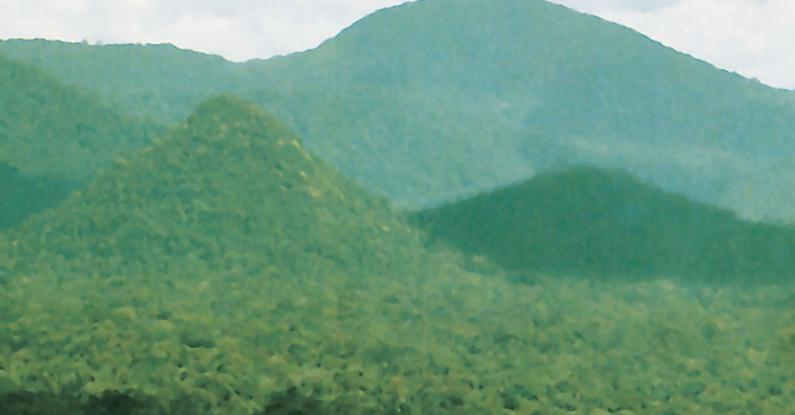
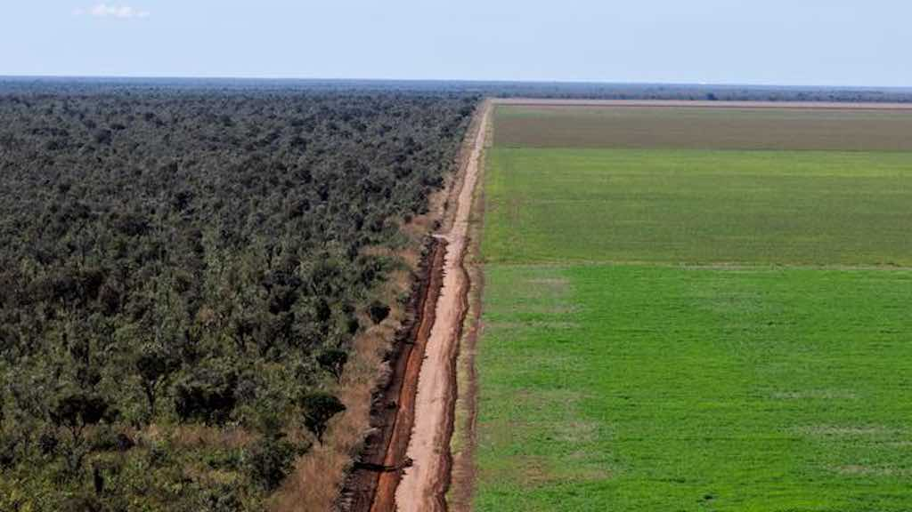
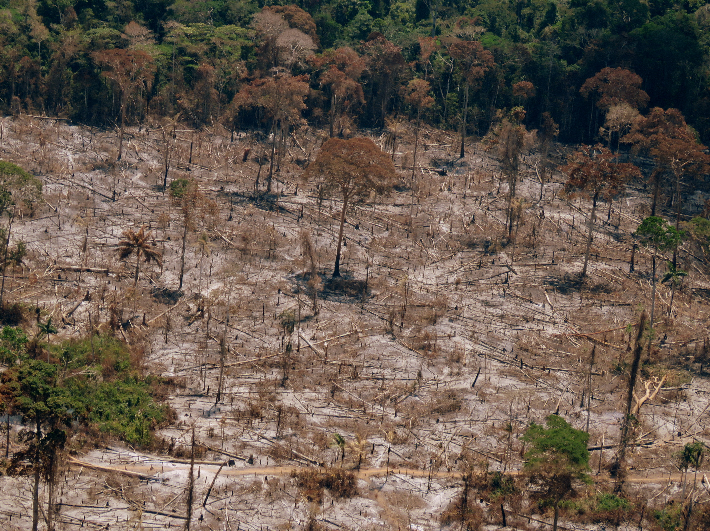

Pirâmides na Amazônia, verdade ou mito?

Créditos:Veja
Verdade ou mito
Poucas pessoas tem noção da magnitude e antiguidade da Amazônia,
onde a natureza vivia em harmonia com as populações indígenas. Quando
falamos de “pirâmide na Amazônia “, não estamos nos referindo as grandes
pirâmides do Egito, mas sim uma condição do relevo. O verdadeiro problema é
a concepção das pessoas sobre pirâmides na Amazônia, onde tem gerado
polêmica.
Diversos povos viviam na amazônica, com complexas formas de
sobreviver. O relevo esta em constante transformação e a atividade desses
povos contribuiu para as mudanças no relevo. Diversos arqueólogos, com uma
tecnologia de scanner viram ondulações na floresta parecidas com pirâmides e,
descobriram diversos povoados que viviam ali.
Enfim, a concepção das pessoas que essas pirâmides são iguais as do
Egito é um mito. Porém na floresta amazônica há sim pirâmides no relevo,
devido a um processo de povoados que existia bem antigamente na Amazônia.
Portanto, na geografia, a existência dessas pirâmides é uma verdade.
Total mito
Descobertas das últimas décadas apontam que, antes do achamento do Brasil, entre 1000 e 1400, aldeias interligadas dominavam algumas regiões. Em outras, grupos construíram aterros, que chegavam a até 10 metros de altura, para construir suas casas sobre os mesmos.
Lembrando que as pirâmides construídas na Amazônia não são como as dos astecas ou maias na América Central, essa parte é total mito.
Um mito
Há pouco mais de 40 anos, uma revista trazia uma reportagem de cinco páginas, em cores, mostrando três estruturas em forma de pirâmide cobertas por espessa vegetação,a mais alta delas com cerca de 200 metros de altura.
As fotos haviam sido batidas no final de julho por uma equipe da revista que, seguindo as indicações do arqueólogo e explorador Roldão Pires Brandão, fundador e presidente da ABEPA (Associação Brasileira de Estudos e Pesquisas Arqueológicas), sobrevoara de helicóptero a Serra do Gupira. Brandão, por sua vez, se encontrava na ocasião em Manaus buscando uma cidade perdida que ele achava existir às margens de um dos afluentes do Amazonas.
Contudo, a própria reportagem encarregou-se de desfazer o mistério ao incluir o categórico parecer do geógrafo Aziz Nacib Ab’Saber (1924-2012), diretor do Instituto de Geografia da Universidade de São Paulo (USP), dando conta de que as “pirâmides” não passavam de um dos inumeráveis agrupamentos de morrotes formados por antigos restos de erosão não só no Alto Rio Negro, mas em outros pontos da Amazônia, no bordo do Planalto das Guianas, e na região Nordeste.
Ou seja, as piramides na Amazonia são um mito.
Pirâmides na Amazônia, verdade ou mito?
Não que tenham sido construídas na Amazônia pirâmides como
das construídas pelos maias e astecas na América Central – isso
continua sendo um mito. Mas descobertas arqueológicas feitas
nas últimas décadas indicam que, antes de o Brasil ser
descoberto, a população nativa da Floresta Amazônica era
habitada por muitas mais pessoas e tinham costumes diferentes
do que se costuma imaginar.
PIRÂMIDES NA AMAZÔNIA, MITO OU VERDADE?
Em minha opinião as pirâmides na Amazônia são um mito. Pesquisei sobre o
assunto e ao que tudo indica, essa informação está completamente errada.
Não que tenham surgido na Amazônia pirâmides ao estilo das construídas por
maias e astecas na América Central isso continua sendo pura mentira.
Pesquisei também que do século 17 em diante, descrições desse tipo se
tornaram raras, o que levou muitos críticos a considerar que Carvajal e outros
exploradores exageravam bastante nos relatos sobre o assunto. “Existiam
sociedades complexas no rio Amazonas quase inteiro, no médio e baixo
Orinoco, na Bolívia e em outras áreas”, diz o arqueólogo americano Michael
Heckenberger, que há anos estuda sobre o assunto.
Pirâmides na Amazônia
De acordo com pesquisas atuais há indícios e provas que há pirâmides sim na
Amazônia, só que tudo indica que elas não foram produzidas por brasileiros e sim de
pessoas de algum país da América Central, pela semelhança e estilo das pirâmides
construídas pelos astecas centrais americanos. Então sim é verdade, de acordo com o
site: https://super.abril.com.br/historia/as-cidades-perdidas-da-amazonia/
Não que tenham sido erguidas na Amazônia pirâmides ao estilo das construídas por
maias e astecas na América Central – isso continua sendo pura ficção. Mas
descobertas arqueológicas feitas nas últimas 3 décadas indicam que, antes de o Brasil
ser descoberto, a população nativa da Floresta Amazônica era muito mais numerosa e
sofisticada do que se costuma imaginar.
Entre os anos de 1000 e 1400, verdadeiras super. aldeias interligadas por boas
estradas dominavam certas regiões. Em outras, grupos de até 15 mil erguiam aterros
com até 10 metros de altura para construir suas casas sobre eles e dar um chapéu nas
inundações. “Existiam sociedades complexas no rio Amazonas quase inteiro, no médio
e baixo Orinoco, na Bolívia e em outras áreas”, diz o arqueólogo americano Michael
Heckenberger, que há anos estuda um conjunto de agrupamentos desse tipo no Alto
Xingu. “Em 1500, a Amazônia provavelmente era uma área de enorme variabilidade
cultural, com grupos regionalmente interligados.”
A expansão da fronteira agrícola na Amazônia

Créditos:Jornal Correio do Brasil
"Associada ao processo de expansão da fronteira agrícola, a distribuição espacial das áreas desmatadas, assim como dos focos de calor, reflete, diretamente, o crescimento de atividades intrinsecamente articuladas a esse processo, tais como a extração de madeira e a abertura de pastagem, que compõem, juntamente com a expansão do cultivo de grãos, um mosaico de usos diferenciados do espaço amazônico que veem alterando, de forma radical, a dinâmica tradicional de ocupação da Amazônia brasileira.""
Também foi verificada a expansão da soja e pecuária diretamente na área de Floresta Amazônica, área de fronteira agrícola ao norte do país, e os efeitos ambientais que estão sendo gerados em razão dessa cultura.
"A expansão da fronteira agrícola é de claro interesse dos empresários que lidam com matéria-prima vegetal, recursos naturais e expansão do agronegócio. No entanto, tem consequências desagradáveis e prejudiciais à Amazônia Legal, tais como destruição da vegetação, redução à biodiversidade do planeta, extrativismo vegetal, erosão dos solos, degradação das áreas de bacias hidrográficas, liberação de gás carbônico na atmosfera, mortandade de animais, desequilíbrio social e ambiental, dentre outros. Por mais que tentem conciliar exploração dos recursos com equilíbrio ambiental, os danos são bem maiores do que a recomposição do meio ambiente. Portanto, apesar de ser uma alternativa para conciliar a preservação da vegetação e a produção capitalista, não tem sido eficaz o conjunto das políticas. Sendo assim, não concordo com o tipo de exploração econômica predatória, apesar de o discurso apresentado ser de desenvolvimento sustentável (como o 12° objetivo das 17 ODS: Consumo e produção responsáveis)".
"A fronteira agrícola representa uma área mais ou menos definida pela expansão das atividades agrícolas para além do ambiente natural. No período posterior ao descobrimento, quando a coroa portuguesa decidiu introduzir a produção agrícola no país, a primeira fronteira agrícola brasileira foi criada por uma zona costeira composta principalmente pela Mata Atlântica.
Geralmente, nesta área, os casos de desmatamento ilegal e conflitos relacionados à posse e uso da terra são registrados em terrenos baldios, o espaço natural pertence à aliança e não é cedido a fixada por propriedade legal, servindo de moradia para índios e comunidades tradicionais e familiares.
As frentes de expansão agrícola muitas vezes são realizadas por assentados que passaram a cultivar em terras devolutas, envolvendo a agricultura familiar e a autossuficiência, com produção, organizada em/por cooperativas.
Das disputas territoriais envolvendo povos indígenas e principalmente posseiros, ocupantes e grileiros, surgiram grandes conflitos rurais, com assassinatos recorrentes e a formação das chamadas " terras sem lei ". Analisando essa situação, se conclui que a principal necessidade do meio rural atual está relacionada à ação pública para realmente solucionar os problemas de uso de terrenos no Brasil, monitorar fraudes e controlar conflitos, já que os títulos de terra neste país são em grande parte ilegais, trazendo sequelas econômicas e sociais aos necessitados e utilizadores dessas terras. (Embasado na pesquisa do geógrafo Ariovaldo Umbelino de Oliveira.)"
"Quando os indicadores medem um período maior de tempo, os avanços se evidenciam. Dados do Inpe mostram que a área devastada em 2014 (5.012 km²), em relação a 2004, foi reduzida em 79%. O mesmo ocorre quando se coloca o acumulado em 2015 (5.831 km²) frente ao de 2005 (19.014 km²). Nesse caso, a derrubada diminuiu 69,3%."
"
"A taxa de desmatamento vem oscilando em torno de cinco mil km² ao ano. Ainda é elevada, mas muito menor que a taxa entre 1988 e 2005”, afirma o presidente do Conselho de Sustentabilidade da Entidade.
Censo
Créditos: IBGE
Estados que abrigam a amazônia e sua densidade demográfica segundo o Censo do IBGE-2010
-Amazonas: 2,23
-Acre: 4,47
-Rondônia: 6,57
-Roraima: 2,01
-Amapá: 4,70
-Maranhão: 19,95
-Tocantins: 4,98
-Mato Grosso: 3,36
-Pará: 6,09
Amazônia: Queimadas e Desmatamento

Créditos: Wikipedia Commons
Quanto da mata original já foi consumida por desmatamentos e queimadas?
“Já foram desmatados 700.000 km2. Isso equivale à área de 23 Bélgicas, ou 17 Holandas, ou ainda 172.839.500 campos de futebol, (entre 15% 20%).”
Quais são as medidas do governo para com incêndios criminosos e sazonais?
“A regularização fundiária é vista pelo Ministério do Meio Ambiente como uma solução para prevenir casos de queimadas e desmatamento na Amazônia. Em 2019, o governo levou ao Congresso a medida provisória 910, que trata do tema, mas a MP venceu, e a proposta ainda não avançou.
O objetivo da MP era estabelecer a regularização fundiária de ocupações de exploração direta de terras do Incra (Instituto Nacional de Colonização e Reforma Agrária) e da União. Para o governo, essa proposta teria o potencial de reduzir conflitos agrários e violações ambientais.
Outra solução para os problemas ambientais da Amazônia defendida por Ricardo Salles é a bioeconomia. O ministro insiste que o desenvolvimento econômico não é inimigo do meio ambiente, e que a falta de recursos dos habitantes da região diminui a sua capacidade de ajudar a conservar o meio ambiente. A ideia do MMA é dar alternativa econômica para que habitantes da região privilegiem a bioeconomia, deixando de lado atividades ambientalmente predatórias.
Outros eixos estratégicos do Ministério do Meio Ambiente para diminuir as queimadas e o desmatamento na Amazônia são o zoneamento da região e o incentivo à bioeconomia.
A ideia do zoneamento ecológico-econômico da Amazônia Legal é discutida pelo governo federal há mais de 30 anos. No governo Lula, foi tema de um decreto publicado em 2010.
O zoneamento funciona como um plano diretor na gestão ambiental de um território, para promover um equilíbrio entre a proteção do meio ambiente e a exploração dos recursos. O governo determina uma distribuição geográfica para as atividades que se desenvolvem, e as áreas passam a ser exploradas de acordo com seu potencial.”